There are two main reports supplied for assets. You can of course use the MoneyWorks report write to customise these, or to create your own reports.
This lists the assets and their values as at today. The assets are ordered the same as they are in the Asset list, and you have the option to just report on the highlighted asset(s).
Show History: Turn this on to show the history of each asset (acquisition, depreciation runs, revaluations, memos etc).
This lists the assets and their values for the nominated Asset Categories at a point in time. You would typically use this report in your formal reporting.
For Department: To just list the assets for a nominated department, select the department from the pop-up menu. This is based on the Department field in each asset record.
Non Depreciable: By default, the report only includes assets that were active (or new) in the reporting interval. Turn this option on to include Non Depreciable assets.
Other Assets: Similar to Non Depreciable, turn this on to include other assets.
Importing
Assets and Asset Categories can be imported provided they are in a suitably formatted tab delimited text file (importing using XML is not supported).
Importing Asset Categories
1. Choose File>Import>Asset Categories
The Asset Category Import field order will open. This displays the required order of the import fields.
If the first line of your text file is for headings, set the First row is heading
checkbox
Click OK
The standard file open dialog will be displayed. Use it to navigate to and open the text file
If any errors are detected an alert will be displayed, and no categories will be imported.
Note: You can also paste suitably formatted tab delimited text directly into the Asset Category list.
Importing Assets
Choose File>Import>Assets
The standard file open dialog will be displayed. Use it to navigate to and open the text file containing the asset information.
The Asset Import Field Order window will be displayed
Use this is align the MoneyWorks asset fields on the right to the fields in your text file (see Importing into other Files for information on Import Maps).
Click OK
MoneyWorks will check and import the assets.
Notes
Not all fields in the register are available for import, and all imported assets will have their status set to "New", allowing them to be edited prior to depreciation (or a change to a different type of asset).
When transferring assets from another system in MoneyWorks it is important to ensure that the bookvalue is correct and balances to the quantity multiplied by the cost less the accumulated depreciation.
Where a transferred asset uses Diminishing Value, the bookvalue supplied must be that as at the end of a financial year (so that the opening carrying value can be correctly determined).
The Report Writing Tutorial guides you through creating your own custom report using the MoneyWorks report generator. Most of the presupplied reports have been created as custom reports, allowing you to modify them if needed. If you wish to create your own reports, you should work through this tutorial and then read the Reports.
MoneyWorks reports are kept as separate documents: the reports that are supplied with MoneyWorks are kept in the Reports folder in the Standard Plug- ins folder; any reports that you modify or create should be kept in the Reports folder in the Custom Plug-ins folder. This keeps them separate from the pre- supplied ones, allowing you to back them up easily and also to preserve them in future upgrades of MoneyWorks —see Managing Your Plug-ins. Only reports in the Reports folders in these two Plug-ins folders are displayed in the index to reports and the Reports menu.
Because MoneyWorks reports are stored as separate documents outside of your actual accounts, you can use the same report for different companies. You can even use reports created by other MoneyWorks users, and they can use your reports.
Although this tutorial is based on the tutorial file “Acme Widgets”, creating a report is not always document specific so you can use your own document if you wish—creating a report does not affect the MoneyWorks document itself. However remember that the sample reports shown will look different if you don’t use the Acme Widgets file.
In this tutorial we will create a simple gross margin report as shown at right. The report shows the current month’s sales and cost of sales with a percentage breakdown, then last months figures and the dollar difference.
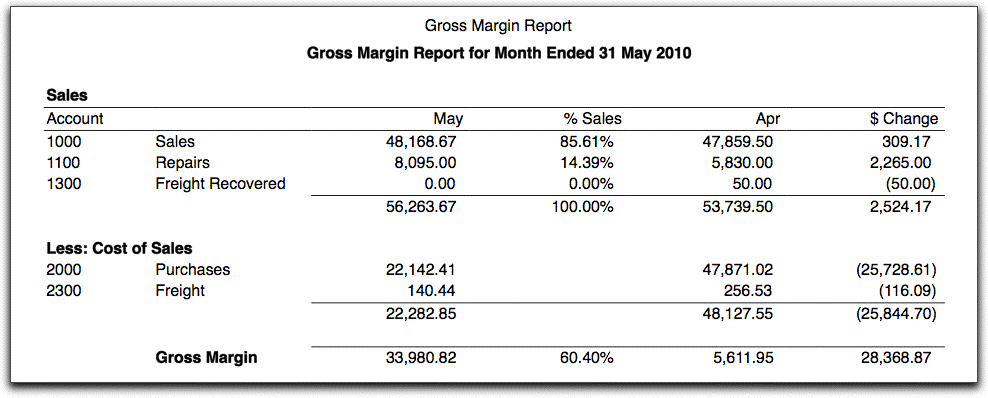
An untitled Report window will open.
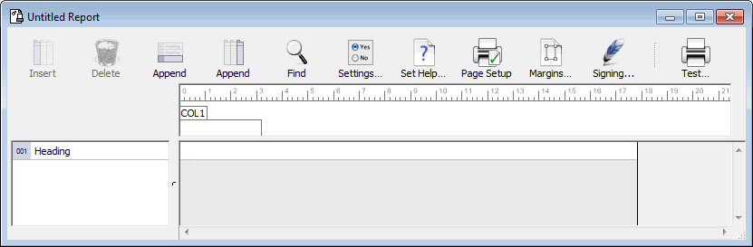
A MoneyWorks report consists of parts (or rows) and columns. When you create a new report, one part (the row labelled “Heading”) and one column (COL1) are created with it, as shown above.
In a profit report, the rows will contain details of our income accounts, then details of our expenses. The columns can contain whatever we feel is appropriate. For example we might want to have this period’s values, year to date figures, budgets and variances, or just the amount left in our budget.
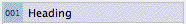
We’ll start of by changing the existing part.
The Part Settings box opens. This is used to specify what will be printed in the part, or what action will take place.
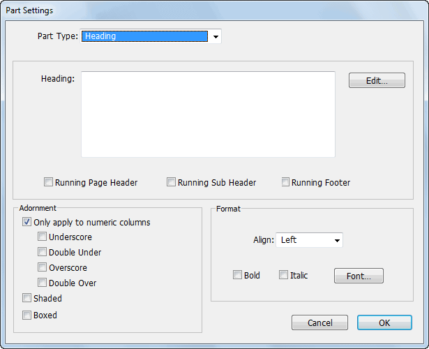
Part label for heading part
This is where we specify the type of Part we want to use.
Choose Accounts of Type
The options available change to reflect what is appropriate for this Part Type. Because we have chosen Accounts of Type, we need to specify which type. This is done in the Type pop-up menu, which contains a list of all the available account types (Income, Expense etc.) in MoneyWorks.
In this case we want to list all of the Sales accounts. The Type pop-up menu is already set to this, so we can just leave it.
Note: If the chart of accounts that you are using doesn’t have any Sales or Cost of Sales accounts, use Income and Expenses instead. The net effect will be a profit and loss report.
If the dialog box that opens does not look like the one above, you have probably clicked in the wrong part of the report setup. Click Cancel, and make sure you double click on the H.
This particular part of the report is currently a heading, which is appropriate as it is the first part in the report.
In the options section, turn on the Column Headings at Top and the Totals at Bottom check boxes
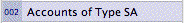
These will cause headings to be placed before the account listing, and for all accounts appearing in the part to be summed and the total printed at the end of the listing.
The window will close, and the words “Gross Margin Report” will appear in the part we have just modified.
The part settings window will be closed. The Part Label we have just altered will change to RT (short for Range by Type).
Part label for a
Heading part
Click on the Append Part Toolbar button
A new part will appear immediately under the one we have just modified. The Append Part Toolbar button adds a new part to the end of the report.
The part settings box will open as before.
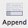
The Append Part
button
The part we have just created will list all our sales. We need to create another part to list our direct cost of sales.
Append another part (click the Append Part toolbar button)
Double click the Part Label to bring up the Part Settings box
Change the Part Type pop-up menu to Accounts of Type
Change the Type pop-up menu to CS: Cost of Sales
Set the Totals at Bottom option, then click OK
The altered part will display in the report.
The Parts down the left side of the report specify what will be printed on each line of the report. We also need to specify what will be printed in each column.
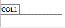
Double click on the Column label (the box that says COL1)Click the Append Column Toolbar button
Another column (COL2) will be added.
Set the Column Type pop-up to Description, and click OK
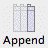
The Append Column button
The Column Settings dialog box will open. If you get a different box, cancel it and try again.
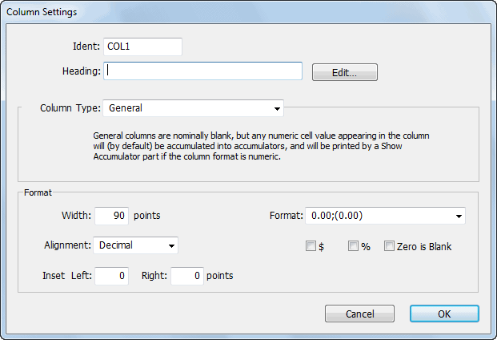
Column label (without a heading).
Use the Append Column Toolbar button to add another column, and
Set the Column Type pop-up menu to Actual
This will print actual ledger values in the column.
Note that two other pop-up menus are enabled. The first one indicates what sort of ledger information we want to show (in this case Movement This Period), whilst the second shows the financial year (as This Year).
Set the Signs pop-up menu to Adjusted
MoneyWorks stores debit balances as positive numbers, and credits as negative. If we were to just print out the balances as they are stored, the sales/income accounts (which generally have credit balances) would all be printed as negative numbers. Selecting the Adjusted option tells
This is used to specify what is put into the columns of the report. We want the first column to be the account code.
Type “Account” into the Heading field
Set the Column Type pop-up menu to Account Code and click OK.
MoneyWorks to print income balances with reversed signs, but leave expenses balances untouched.
The column just created will contain the actual account balances for the report period.
Congratulations! You have just created a report. It should look like this.
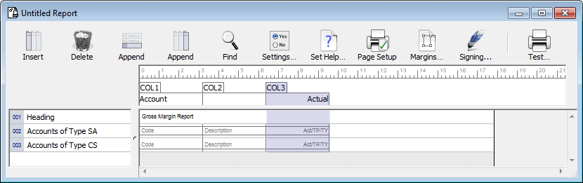
Now that we have created a report, it would be a good idea to see what it will look like when printed.
The Report Settings dialog box will be displayed.
We could also have used Print from the File menu to do this.
Ensure the Omit Zero Balances check box is NOT set
This option suppresses the printing of lines in the report that contain only zero. When designing a report, it is a good idea to see all the lines that will appear in the report.
Set the Output to pop-up to Preview and click the Preview button
The report will be shown in the print preview window (your accounts and numbers may be different).
The account codes and the values printed in the report will depend on the MoneyWorks document that you have open. However the sales accounts will be listed and totalled in the top of the report, followed by the cost of sales accounts.
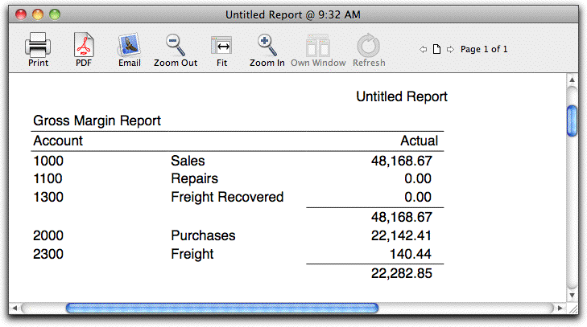
Close the preview windowBeautiful as the report is, it could do with some improvements! For a start, the heading could be made larger and centred.
The Part Settings box will open.
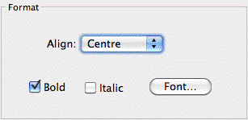
Set Bold option, and the Align to Centre
This will centre and bold the heading. If you want, you can choose a larger font size or a different font by clicking the Font button. Note that if you do this, MoneyWorks will ask if you want to override the standard font—this is because the report may not be portable (other computers might not have that font).
Click OK to close the Part Settings box
We should put some space between the heading and the report body.
The part that prints the income will be highlighted.
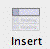
Click the Insert Part Toolbar button or press Ctrl-N/⌘-NThis inserts a new Part above the highlighted one.
Let’s see the effect of the changes we have made.
Click on the Test Toolbar button and preview the report
When you have finished, close the Preview window
Before we look at the report again, it might be a good idea to save it. This is so we can use again later (note that you cannot do this is you are using the MoneyWorks trial version).
The standard Save File dialog box is displayed—this will be pointing at the Reports folder in your MoneyWorks Custom Plug-ins folder (which will have been created for you if necessary).
Call the report “Gross Margin Report” and click Save
The report thus far shows the sales and cost of sales. We’ll extend it so that it prints the gross margin, i.e. total sales less cost of sales.
From the Part Type pop-up menu, choose Accumulator Op
An accumulator is a way of adding up data in the Account Parts.
The Part defaults to a blank heading, which will put some white space between the report heading and the body of the report.
The Insert Part
button
Every accumulator has to have a name—this is because you can use more than one accumulator in a report. There is nothing special about the name “TOTAL”—it’s just a bit more descriptive than, say, “FRED”.
We should also insert some space between the sales and cost of sales parts.
Insert Part Toolbar button or by pressing Ctrl-N/⌘-N
Note that the accumulator options pop-up menu is set to On,Clear. This option activates the accumulator, and sets its values to zero. The data from every report line from here on will be added to the accumulator. This means that debit
balances will increase the value of the accumulator (because they are positive), while credit balances (being negative) will decrease the value.
Note that the line in the body of the report that corresponds to the accumulator is in grey—this indicates that the Part will not be cause anything to actually print on the report.
From the Part Type pop-up, choose Accumulator Op
Set the accumulator Operation pop-up menu to Show
This will cause the accumulator values to be printed.
We must specify the accumulator name to indicate which accumulator to print. If we specify one that doesn’t exist, MoneyWorks will create one with that name, set its values to zero, and make it start accumulating.
Note that the accumulator total is printed for the Actual column, but it has the wrong sign (it should be positive, as the income is greater than the expenses). This is because it is the sum of the sales accounts (which are negative), added to the sum of the cost of sales accounts (which are positive). We need to reverse the accumulator sign for it to print out correctly. We should also put some additional space between it and the previous line, and also a description saying what it is.
Double-click the Show Accumulator part and change its operation to Show Reversed, and its Adornment to Overscore
When the accumulator is shown in the report, it will be shown with reversed signs (the actual contents will not change).
This will default to a blank heading, which is fine for achieving some blank space in the report.
Preview the report, then close the preview window
To put text into the accumulator line when it is printed, we must put it into one of the cells of the report. A cell is the intersection of a part and a column. Cells can contain text or formulæ. Any value in a cell overwrites the information that would have otherwise been printed1.
The Cell Settings dialog box will open.
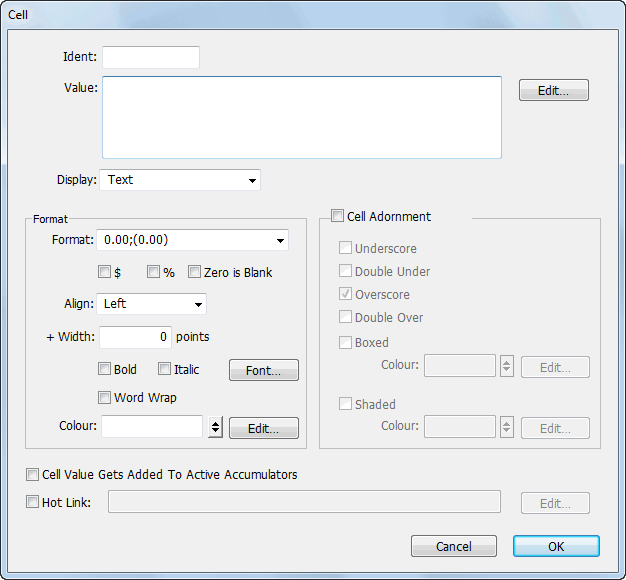
Click OK to save the cell settings
Preview the report, and close the preview window when finished
We’ve got the basic part settings correct for the report now. We want to put in comparative results for the previous period, which means having an additional column.
We want each column to have the name of the period to which it refers. However this will vary depending upon for which periods it is printed, so we can’t just type in for example “June” as a column heading. Instead we use a report variable. This is calculated whenever the report is printed. The variable for the name of a period for a column is ColPer.
Open the Actual (COL3) column by double-clicking its label
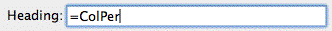
The equals sign is to indicate that an expression follows which MoneyWorks will evaluate when the report is printed (don’t type the quote marks though).
We now want to make another column for the previous period—apart from the period, this will be essentially the same as the column we have just worked on, so we’ll use copy and paste.
The column information will be copied to the clipboard
Choose Edit>Paste or press Ctrl-V/⌘-V
A copy of the column is added to the right of the existing columns.
clicking the column label
We want this column to refer to the previous period.
Change the Value pop-up from Movement This Period to Movement Last Period and click OK
Preview the report, closing it when finished
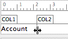
The cursor will change into a column adjustment tool.
The column will narrow. Dragging right will increase it’s size.
We’ll now take the dollar difference of the this month and last month, to see how much performance has improved (or otherwise).
Use the Append Column Toolbar button to add a new column
This indicates that this column will be based on the values of other columns or MoneyWorks variables
Type “Col3-Col4” into the Formula, and click OK
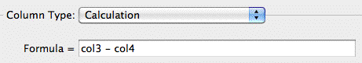
COL3 and COL4 are the column names (not to be confused with the column titles). These appear in the top of each column, and are used to reference the column.
Preview the report, closing when finished
It is often useful to look at percentage breakdowns on a report. For example, what percentage of total sales are purchases, or what percentage of income is derived from consulting.
Such details are not difficult to prepare in MoneyWorks. However before we can calculate an item as a percentage of another item (such as sales), we need to determine what the total for the other item is. Thus we will create an invisible section of the report that calculates the total sales, and we will use this to work out percentage of sales figures.
Make the topmost of these new parts an Accumulator with a name of “PCT”, and the operation On, Clear
We will total the income into this new accumulator
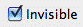
Invisible check boxWe need to turn the accumulator off so it won’t keep accumulating as we print out the actual income.
We have now set up an accumulator that pre-calculates the total sales—it does this for each column in the report. We will now insert a column in our report that displays each income item as a percentage of the total income.
A new part will be inserted to the left of COL4
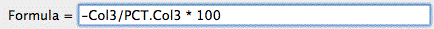
Recall that COL3 contained the totals for the month. PCT.COL3 refers to COL3 in the accumulator called PCT. You will recall that PCT contains the total income (and further that this, being a credit, was a negative number—hence the negative sign at the start of the formula).
Note: You’ll get an error message when you accept this calculation. This is because the accumulator PCT may not have been created when you come to do the column calculation. In this case it will be, so just ignore the warning.
This will append a % symbol to each value in the column.
The invisible option means that no information is printed for the part, allowing us to use parts in calculations and not have them appear on the page. In this case, because
Set the Invisible option to hide a report Part.
You’ll note in preview that the percentage of sales is also applied to the cost of sales. You can suppress this if you want by using a blank cell.
the PCT accumulator is activated, the total income will be placed into this accumulator.
Double click on the cell at the intersection of the Accounts of Type CS part and the COL6 column.
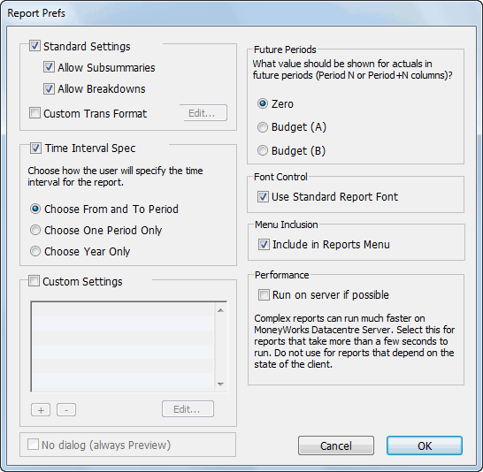
The Cell Settings dialog box will open. We can if want put text or a formula into this, but we will just leave it blank.
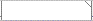
The Cell Settings box will close, and the cell will have adiagonal line in the top right corner, indicating a cell setting. This overrides the column setting, effectively blanking it out.
A Diagonal line indicates a cell setting
If you need to remove a cell, highlight it and click the Delete button.
When you print a report, you set a period range for which the report is to be printed (one copy of the report is printed for each period). This report prints out information for two periods, and hence it may be more sensible to have only one period available. We use the Report Preferences to do this.
Click the Settings toolbar button
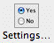
The Report Settings window will open This allows us to specify what run-time options will be available for the
Set the option Choose One Period Only and click OK